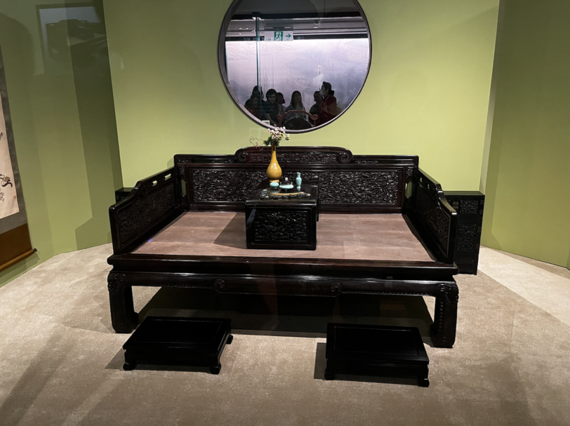
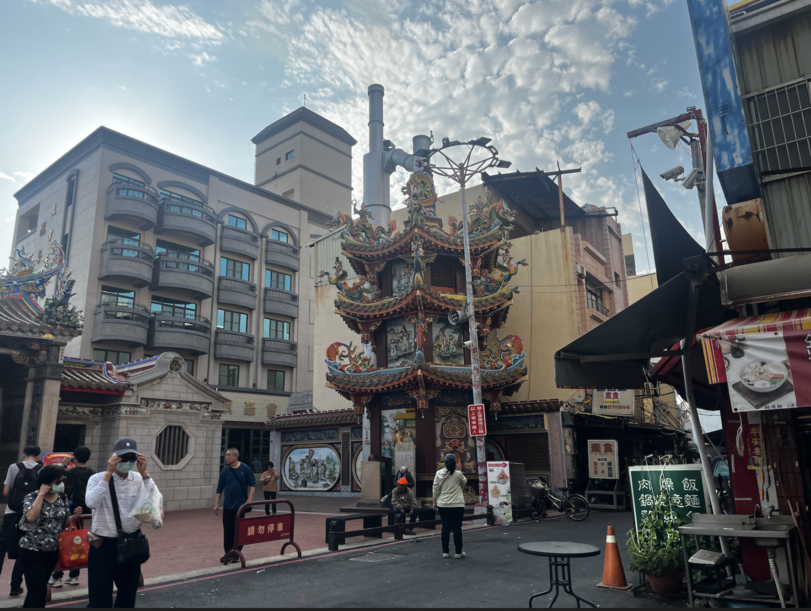
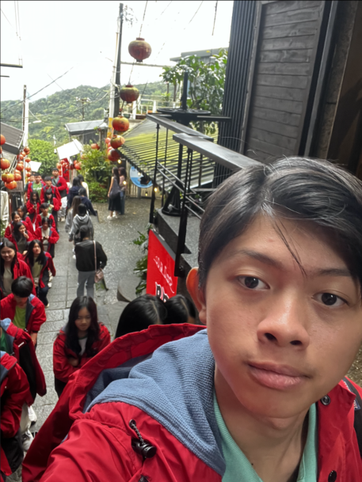

In the bus ride, the tour guide always provided us with some historical knowledge about the history of dynasties in China and also Taiwan. They have left behind artifacts such as the Jadeite Cabbage, because in the past, chinese cabbages were said to help the king breed more of his wives, and jade was also a very precious stone in Chinese history.

In Cijin Island, there were also a few historical information and also facts that you could take note of. One of which is their buildings are very colorful, and they do it to give more color to their buildings instead of plain old colors.

Finally, in Jiufen Old Street, there were some history with Japan, because they were the ones who made these streets, and they were very rich with gold mines in this place.